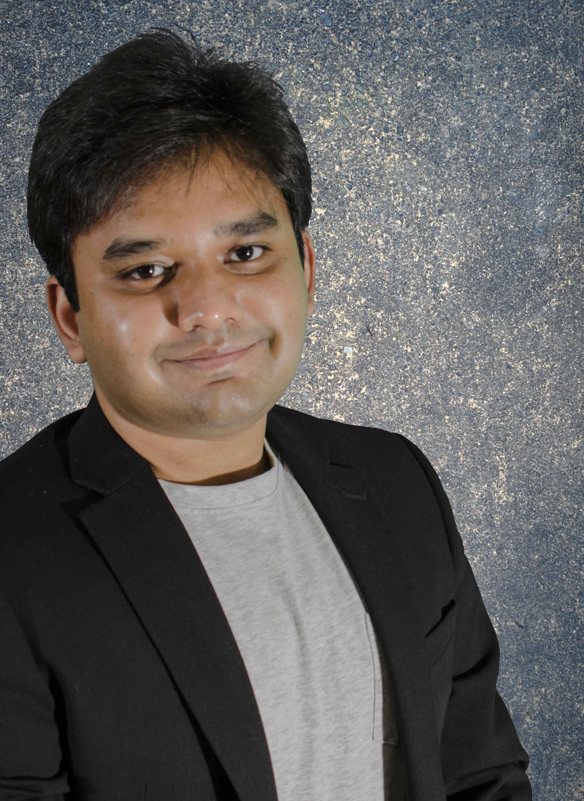
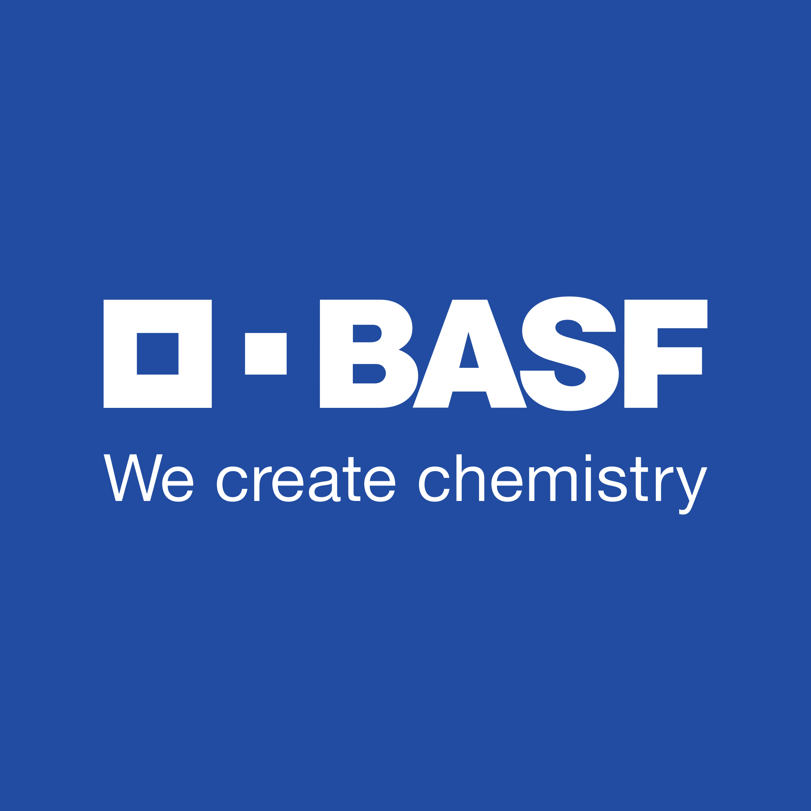
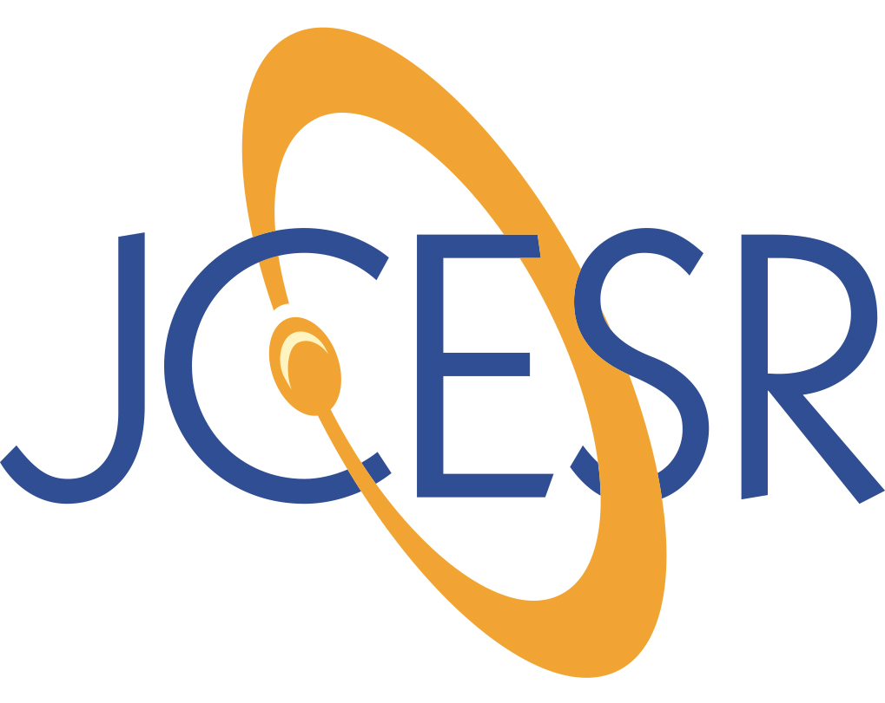

|
Dipobrato Sarbapalli |
|
I am currently working for Gotion Inc. as a Research Scientist. My work focuses on electrolyte development for advanced battery chemistries and I also enjoy implementing electrochemical protocols to characterize cell degradation. Prior to Gotion, I interned with Natrion, where my work focused on implementing solid electrolytes with Li metal anodes. The outcome from my work led to the development of SEI-forming wetting agents, tailored to Natrion's product. Electrochemical data from this approach with newer wetting agents is highlighted in this news article. I hold a doctorate in Materials Science and Engineering from the University of Illinois at Urbana-Champaign, with my dissertation focusing on developing electroanalytical methods to study electron transfer and ion intercalation on graphene films. I am trained as an experimental materials scientist, and I am focused on implementing my skillset on real-life problems in the world of batteries. As I gain more experience, I am trying to learn more processes beyond cell chemistry R&D so as to better understand and shape my own approach to problem solving within the field of batteries. Prior my doctoral studies, I graduated with an M.S. in Civil Engineering from UIUC in 2018, where I worked with Dr. Paramita Mondal on studying reaction mechanisms in inorganic binder materials. I spent the summer of 2017 working as a DAAD Fellow with BASF at their headquarters in Ludwigshafen, where I worked with Dr. Tobias Umbach. I received my B.Tech in Civil Engineering from NIT Trichy, graduating first class with distinction. During my undergraduate studies, I spent my sophomore and junior year summers interning at the IIT Delhi with Dr. Biswajit Bhattacharjee, researching on durability and sustainability of concrete binder materials. If you wish to contact me, please feel free to do so through my email. Likewise, I am also a regular to the monthly Battery Brunch event and would love to have a chat on anything related to batteries, industry careers and mentorship!
Email /
Resume /
Publications /
Google Scholar /
LinkedIn
|
 |
{kind=link}
|
My doctoral research focused on a two-pronged approach for i) developing analytical techniques and ii) tailoring interfaces on carbon materials, to advance the understanding of electrode-electrolyte interfaces in Li-ion and beyond Li-ion battery technologies.
I also enjoy scripting in Python which enables efficient data analysis and design of custom experiments involving larger volumes of data. Please see my dissertation/publications for examples of my work. If you require a copy of my articles/book chapters, please send me an email! |
|
|
|
Abhiroop Mishra, Dipobrato Sarbapalli, Md. Sazzad Hossain, Zachary T. Gossage, Zheng Li, Alexander Urban and Joaquín Rodríguez-López Journal of The Electrochemical Society, \(2022\), [BibTeX] |
|
Yunxiong Zeng, Zachary T. Gossage, Dipobrato Sarbapalli, Jingshu Hui, and Joaquín Rodríguez-López ChemElectroChem, \(2022\), [BibTeX] |
|
Dipobrato Sarbapalli, Abhiroop Mishra, Zachary T. Gossage, Kendrich Hatfield, and Joaquín Rodríguez-López Batteries, IOP Publishers, \(2022\), [BibTeX] |
|
Dipobrato Sarbapalli, Abhiroop Mishra, and Joaquín Rodríguez-López Analytical Chemistry, \(2021\), [BibTeX] |
|
Tylan S. Watkins, Dipobrato Sarbapalli, Michael J. Counihan, Andrew S. Danis, Jingjing Zhang, Lu Zhang, Kevin R. Zavadil, and Joaquín Rodríguez-López Journal of Materials Chemistry A, \(2020\), [BibTeX] |
For a full list of publications, check out my Google Scholar or access my List of Publications here.
|
|

|

|
 |  | |||
| NIT Trichy 2011-2015 |
UIUC 2015-2022 |
DAAD Fellow Summer 2017 |
BASF Summer 2017 |
JCESR 2019 - 2022 |
Natrion Spring 2022 |
Gotion 2023-present |
|
|
| • Graduation: I have defended my Ph.D. dissertation and graduated with a Ph.D. in Materials Science and Engineering, and will be joining Gotion Inc, working in an R&D team led by Dr. Jennifer Hoffmann. |
| • Spring '22 Internship: Just wrapped a stellar semester while interning at Natrion, where I worked on developing solid-state electrolytes for Li-ion batteries. My work primarily focused on implementing the company's solid electrolyte with Li-metal anodes. I had the honor of working under a superb leader, Alexander Kosyakov and was always well supported by a passionate, talented, and hard-working team. Many thanks to you all! |
| • Fellowship Honorable Mention: Link Energy Foundation Fellowship gave an honorable mention to my application, and I wish to acknowledge my mentors (Dr. Jingshu Hui, Dr. Michael J. Counihan and Dr. Zachary T. Gossage), my peers and adviser, Professor Joaquín Rodríguez-López for their support. |
| • Workshop Speaker: I was invited by the American Concrete Institute Student Chapter to deliver a two-hour workshop on using OriginPro for plotting and data analysis. |
| • Poster Presentation: I have been awarded the Best Poster Award at the SEAC Poster Session in PITTCON 2020, Chicago. [Poster PDF] | • Graduation (M.S.): Graduated with a M.S. in Civil Engineering from the University of Illinois at Urbana-Champaign (August 2018). I will be transitioning into my Ph.D. in Materials Science and Engineering, working with Professor Joaquín Rodríguez-López on electrochemical energy storage. |
| • Teaching Assistant CEE \(\sf 300\) Spring 2018:Returned as a Lab Instructor, rated as an Outstanding Teaching Assistant. |
| • Teaching Assistant CEE \(\sf 401\) Fall 2017: Returned as the lab TA, rated as Excellent Teaching Assistant. |
| • Fellowship Award: Awarded the DAAD RISE Professional Fellowship for an internship with BASF Ludwigshafen (March 2017). I will be spending my summer working within the Materials Physics Division, Advanced Materials and Systems Research at Ludwigshafen. |
| • Teaching Assistant CEE \(\sf 401\) Fall 2016: Completed a graduate/senior undergradute TA for "Concrete Materials" and was rated as an Outstanding Teaching Assistant. I guided a lab course of ≈18 graduate and undergraduates in the preparation and testing of fresh and hardened concrete. Prepared a design project for the students in the later half of the course. |
| • Graduation (B.Tech): Graduated with a B.Tech in Civil Engineering from NIT Trichy (May 2015). I will be joining the Construction Materials program at the University of Illinois at Urbana-Champaign, working with Professor Paramita Mondal. |
|
Template credits Jon and Bhavesh. Last updated: 20th August 2022. |